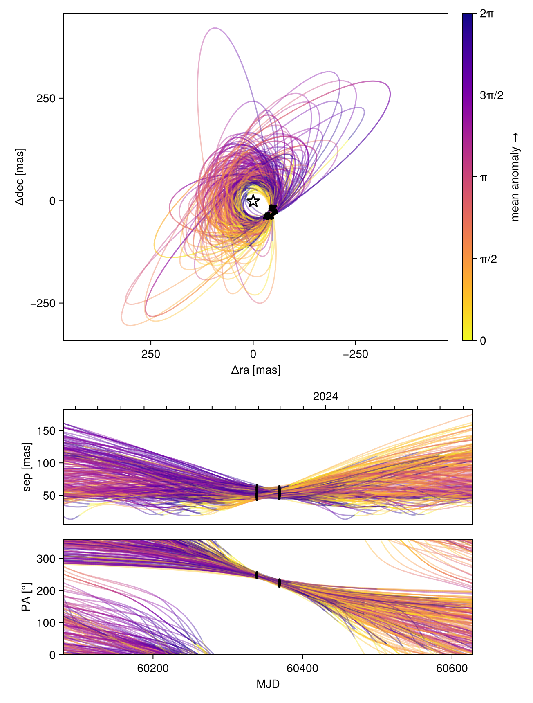
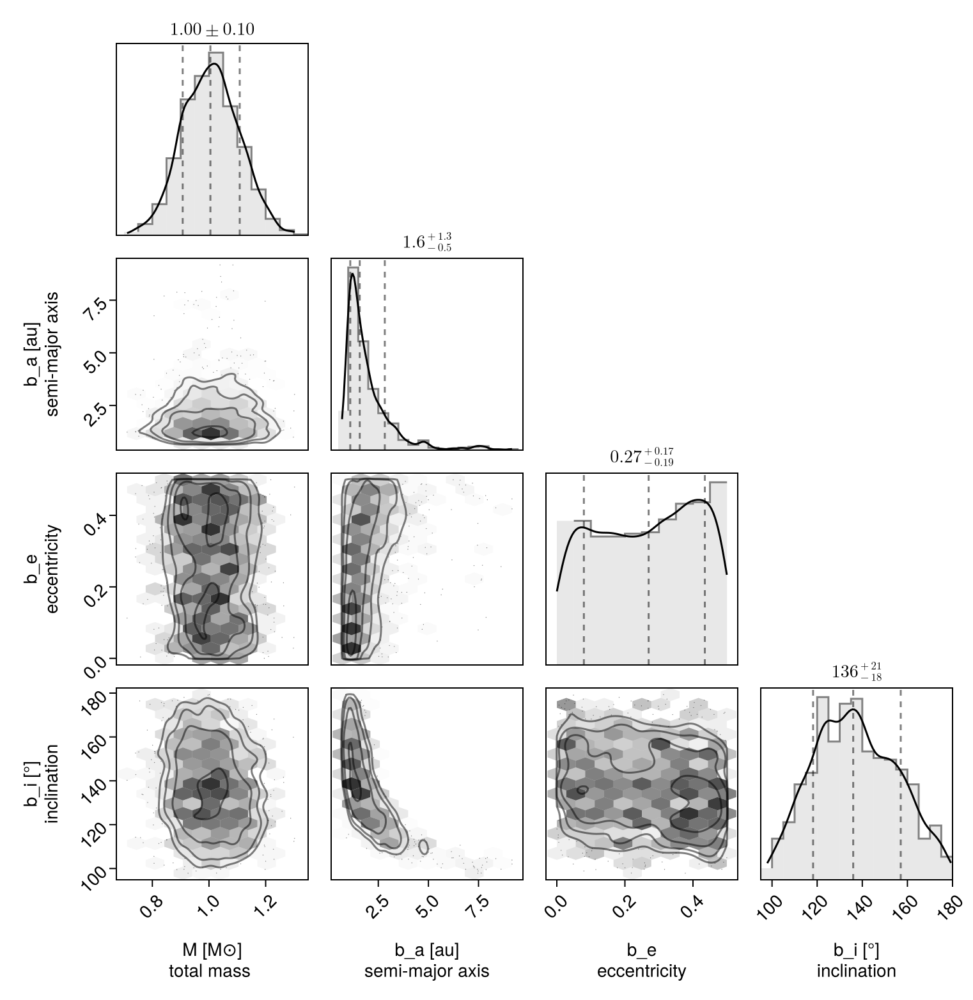
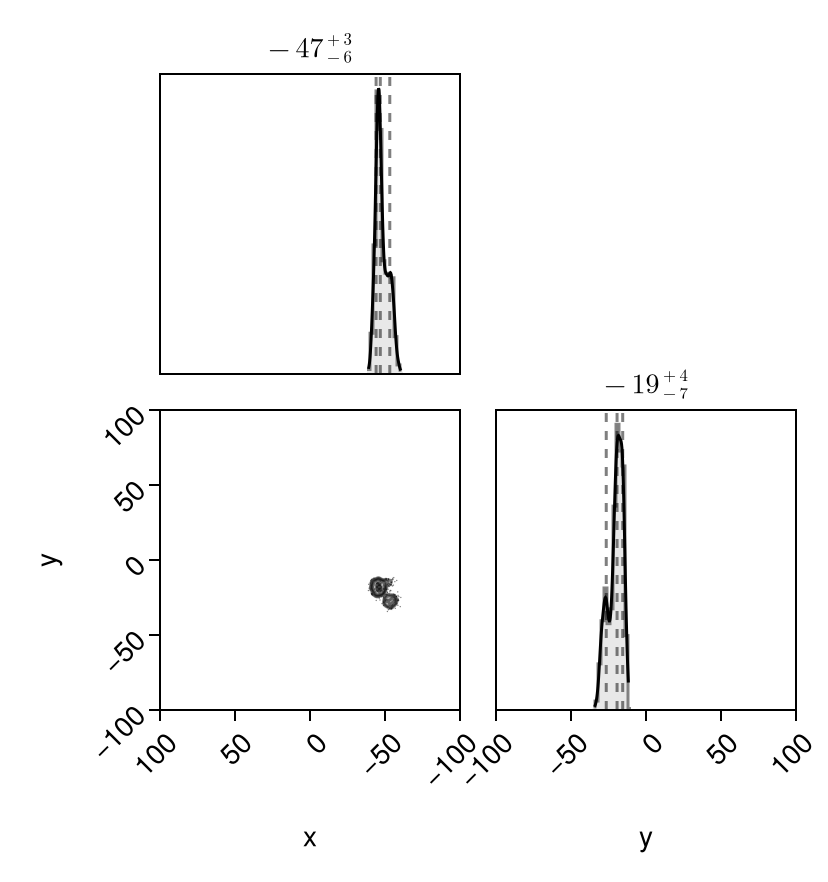
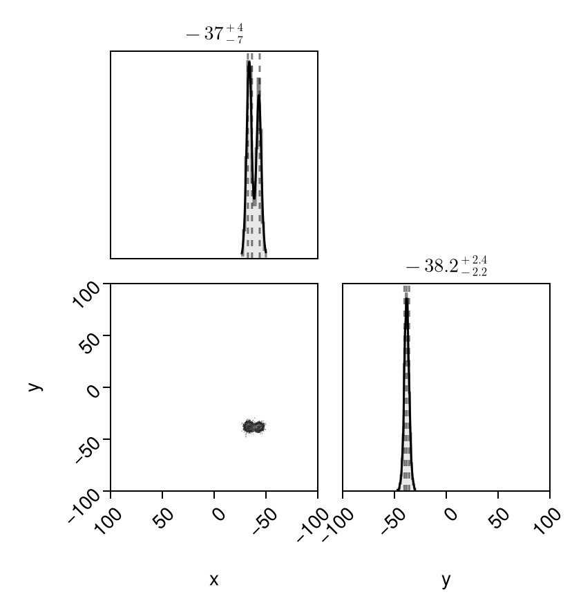

Fitting Likelihood Maps
There are circumstances where you might have a 2D map of planet likelihood vs. position in the plane of the sky ($\Delta$ R.A. and Dec.). These could originate from:
- cleaned interferometer data
- some kind of spectroscopic cube model fitting to detect planets
- some other imaginative modelling process I haven't thought of!
You can feed such 2D likelihood maps in to Octofitter. Simply pass in a list of maps and a platescale mapping the pixel size to a separation in milliarcseconds. You can of course also mix these likelihood maps with relative astrometry, radial velocity, proper motion, images, etc.
If your likelihood map is not centered on the star, you can specify offset dimensions as shown below.
Image modelling is supported in Octofitter via the extension package OctofitterImages. To install it, run pkg> add http://github.com/sefffal/Octofitter.jl:OctofitterImages
For simple models of interferometer data, OctofitterInterferometry.jl can already handle fitting point sources directly to visibilities.
using Octofitter
using Distributions
using OctofitterImages
using Pigeons
using AstroImages┌ Warning: Module Octofitter with build ID ffffffff-ffff-ffff-0000-0037f106901e is missing from the cache.
│ This may mean Octofitter [daf3887e-d01a-44a1-9d7e-98f15c5d69c9] does not support precompilation but is imported by a module that does.
└ @ Base loading.jl:1948Typically one would load your likelihood maps from eg. FITS files like so:
# If centred at the star:
image1 = AstroImages.recenter(AstroImages.load("image-example-1.fits",1))
# If not centered at the star:
image1 = AstroImages.load("image-example-1.fits")
image1_offset = AstroImage(
image1,
# Specify coordinates here:
(
# X coordinates should go from negative to positive.
# The image should have +RA at the left.
X(-4.85878653527304:1.0:95.14121346472696),
Y(-69.0877222942365:1.0:30.9122777057635)
)
# Below, there is a platescale option. `platescale` multiplies
# these values by a scaling factor. It can be 1 if the coordinates
# above are already in milliarcseconds.
)
imview(image1_offset)If you're using a FITS file, make sure to store your data in 64-bit floating point format.
For this demonstration, however, we will construct two synthetic likelihood maps using a template orbit. We will create three peaks in two epochs.
orbit_template = orbit(
a = 1.0,
e = 0.1,
i = 0.0,
ω = 0.0,
Ω = 0.5,
plx = 50.0,
M = 1
)
epochs = [
mjd("2024-01-30"),
mjd("2024-02-29"),
]
## Create simulated data with three likelihood peaks at both epochs
x1,y1 = raoff(orbit_template,epochs[1]), decoff(orbit_template,epochs[1])
# The three peaks in our likelihood map
d1 = MvNormal([x1, y1], [
5.0 0.2
0.2 8.0
])
d2 = MvNormal([x1+8.0,y1+4], [
5.0 0.6
0.6 5.0
])
d3 = MvNormal([x1+9.0, y1-10.0], [
6.0 0.6
0.6 6.0
])
d = MixtureModel([d1, d2, d3], [0.5, 0.3, 0.2])
# Calculate a log-likelihood map over a +-50 mas patch around (x1, x2)
lm1 = broadcast(x1 .+ (-50:50), y1 .+ (-50:1:50)') do x, y
logpdf(d, [x, y])
end
# Place in an AstroImage with appropriate offset coordinates
image1_offset = AstroImage(
lm1,
# Specify coordinates here:
(
# X coordinates should go from negative to positive.
# The image should have +RA at the left.
X(x1 .+ (-50:50)),
Y(y1 .+ (-50:1:50))
)
# Below, there is a platescale option. `platescale` multiplies
# these values by a scaling factor. It can be 1 if the coordinates
# above are already in milliarcseconds.
)
imview(10 .^ image1_offset)![]()
That was the first epoch. We now generate data for the second epoch:
x2,y2 = raoff(orbit_template,epochs[2]), decoff(orbit_template,epochs[2])
# The three peaks in our likelihood map
d1 = MvNormal([x2, y2], [
5.0 0.2
0.2 8.0
])
d2 = MvNormal([x2+10.0,y2], [
5.0 0.6
0.6 5.0
])
d3 = MvNormal([x2-4.0, y2-10.0], [
6.0 0.6
0.6 6.0
])
d = MixtureModel([d1, d2, d3], [0.5, 0.3, 0.2])
lm2 = broadcast(x2 .+ (-50:50), y2 .+ (-50:1:50)') do x, y
logpdf(d, [x, y])
end
# Place in an AstroImage with appropriate offset coordinates
image2_offset = AstroImage(
lm2,
# Specify coordinates here:
(
# X coordinates should go from negative to positive.
# The image should have +RA at the left.
X(x2 .+ (-50:50)),
Y(y2 .+ (-50:1:50))
)
# Below, there is a platescale option. `platescale` multiplies
# these values by a scaling factor. It can be 1 if the coordinates
# above are already in milliarcseconds.
)
imview(10 .^ image2_offset)![]()
Okay, we have our synthetic data. We now set up a LogLikelihoodMap object to contain our matrices of log likelihood values:
loglikemap = LogLikelihoodMap(
(;
epoch=epochs[1],
map=image1_offset,
platescale=1.0 # milliarcseconds/pixel of the map
),
(;
epoch=epochs[2],
map=image2_offset,
platescale=1.0 # milliarcseconds/pixel of the map
)
);OctofitterImages.LogLikelihoodMap Table with 5 columns and 2 rows:
epoch map platescale fillvalue mapinterp
┌───────────────────────────────────────────────────────────────────────────
1 │ 60339.0 [-393.192 -387.534 … 1.0 -423.544 101×101 extrapolate…
2 │ 60369.0 [-287.052 -281.177 … 1.0 -423.544 101×101 extrapolate…The likelihood maps will be interpolated using a simple bi-linear interpolation.
We now create a one-planet model and run the fit using octofit_pigeons. This parallel-tempered sampler is slower than the regular octofit, but is recommended over the default Hamiltonian Monte Carlo sampler due to the multi-modal nature of the data.
@planet b Visual{KepOrbit} begin
a ~ Uniform(0, 10)
e ~ Uniform(0.0, 0.5)
i ~ Sine()
ω ~ UniformCircular()
Ω ~ UniformCircular()
θ ~ UniformCircular()
tp = θ_at_epoch_to_tperi(system,b,60339.0) # reference epoch for θ. Choose an MJD date near your data.
end loglikemap
@system Tutoria begin
M ~ truncated(Normal(1.0, 0.1), lower=0)
plx ~ truncated(Normal(50.0, 0.02), lower=0)
end b
model = Octofitter.LogDensityModel(Tutoria)
chain, pt = octofit_pigeons(model, n_rounds=10) # increase n_rounds until log(Z₁/Z₀) converges.
display(chain)[ Info: Determining initial positions and metric using pathfinder
┌ Info: Found a sample of initial positions
└ initial_logpost_range = (-23.58008542168691, -8.845480920042363)
────────────────────────────────────────────────────────────────────────────────────────────────────────────────────────
scans restarts Λ Λ_var time(s) allc(B) log(Z₁/Z₀) min(α) mean(α) min(αₑ) mean(αₑ)
────────── ────────── ────────── ────────── ────────── ────────── ────────── ────────── ────────── ────────── ──────────
2 0 3.66 2.71 5.5 4.74e+08 -41.2 4.01e-26 0.794 0.896 0.957
4 0 4.45 3.12 0.595 2.24e+08 -20.8 5.97e-05 0.756 0.896 0.928
8 0 3.79 3.35 0.812 3.32e+08 -23.6 3.9e-05 0.77 0.895 0.922
16 0 4.14 5.1 1.6 6.69e+08 -22.7 0.141 0.702 0.888 0.911
32 0 4.34 5.1 3.31 1.4e+09 -21 0.484 0.695 0.89 0.911
64 5 4.87 3.26 6.89 2.21e+09 -20.7 0.514 0.738 0.894 0.912
128 14 4.82 3.22 12.1 4.42e+09 -21.1 0.535 0.741 0.897 0.911
256 35 4.69 2.98 24.6 8.98e+09 -21 0.654 0.753 0.891 0.908
512 73 4.72 3.18 48.8 1.79e+10 -21 0.626 0.745 0.896 0.91
1.02e+03 156 4.76 3.05 97.1 3.56e+10 -21 0.637 0.748 0.892 0.909
────────────────────────────────────────────────────────────────────────────────────────────────────────────────────────octofit_pigeons scales very well across multiple cores. Start julia with julia --threads=auto to make sure you have multiple threads available for sampling.
Display the results:
octoplot(model, chain)
Corner plot:
using CairoMakie, PairPlots
octocorner(model,chain,small=true,)
And finally let's look at the posterior predictive distributions at both epochs:
els = Octofitter.construct_elements(chain,:b, :)
x = raoff.(els, loglikemap.table.epoch[1])
y = decoff.(els, loglikemap.table.epoch[1])
pairplot(
(;x,y),
axis=(
x = (;
lims=(low=100,high=-100)
),
y = (;
lims=(low=-100,high=100)
)
)
)
x = raoff.(els, loglikemap.table.epoch[2])
y = decoff.(els, loglikemap.table.epoch[2])
pairplot(
(;x,y),
axis=(
x = (;
lims=(low=100,high=-100)
),
y = (;
lims=(low=-100,high=100)
)
)
)
Resume sampling for additional rounds
If you would like to add additional rounds of sampling, you may do the following:
pt = increment_n_rounds!(pt, 2)
chain, pt = octofit_pigeons(pt)(chain = MCMC chain (4096×19×1 Array{Float64, 3}), pt = PT(checkpoint = false, ...))Updated corner plot:
using CairoMakie, PairPlots
octocorner(model,chain,small=false,)